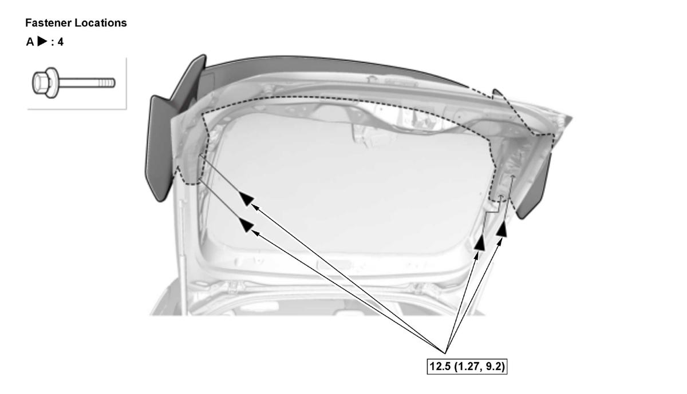

Removal and Installation
NOTE: How to read the torque specifications .
- Tailgate Lower Trim Panel - Remove
- Tailgate Spoiler Trim - Remove
1. Remove the bolts (A).

Courtesy of HONDA, U.S.A., INC.2. Gently close the tailgate.
NOTE: Be careful to not drop the tailgate spoiler trim (A).
3. Remove the tailgate spoiler trim.
4. If necessary, remove the grommets (B).
5. If necessary, disassemble the tailgate spoiler center (A), tailgate spoiler center cover (B), and the tailgate spoiler wing (C).
- All Removed Parts - Install
1. Install the parts in the reverse order of removal.